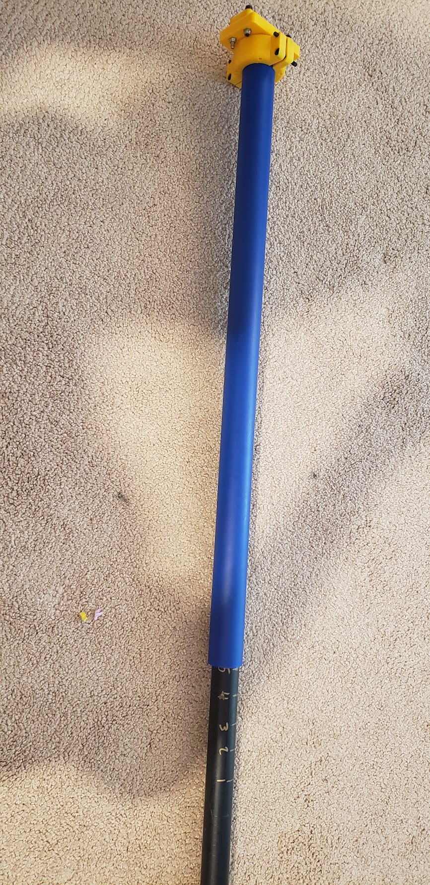
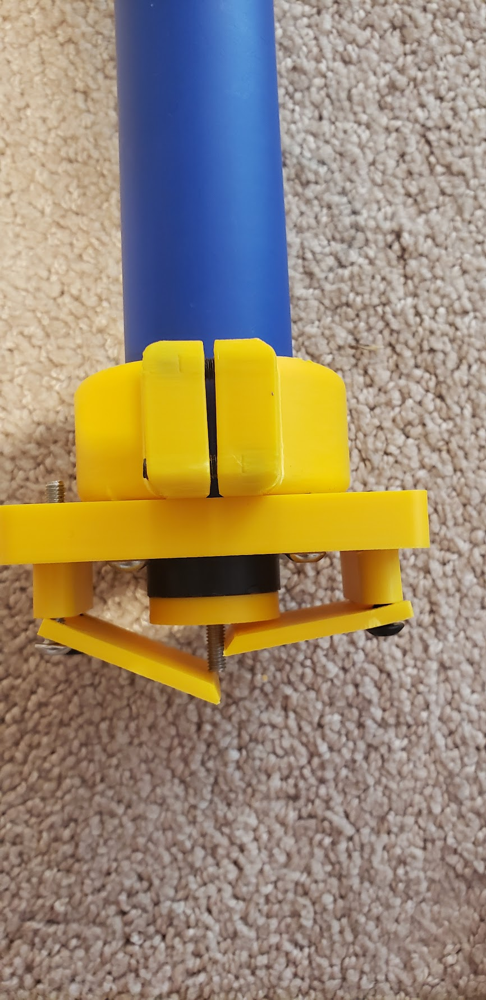

I created this impact strength tester after realizing that there were no good ways to compare filaments across manufacturers, as they used different testing methods. For example, PolyMaker PolyMax PC on PolyMaker's website had around half the impact strength of the same filament on Prusa's website. However, I didn't have my own Charpy impact strength tester, so I decided to make my own that would at least allow me to compare filaments. It uses tubes from FTC fields and a 3D printed frame, to allow a weighted tube to drop down onto the notched test piece.
 For the purposes of this experiment, I am defining broken as either completely broken in half, or bent so badly the test piece falls out of the holder. While there is slight bending and stress marks way before it breaks in half, this allows the test to measure how the material performs under continued stress, even if it is slightly damaged.
To test each filament, I drop the testing rod higher every time in 1 inch increments, until the testing piece breaks or the height goes past 21 inches (the maximum height). This allows the test to also measure the resistance to repeated impacts, not just a single hit. I take the average of 3 trials.